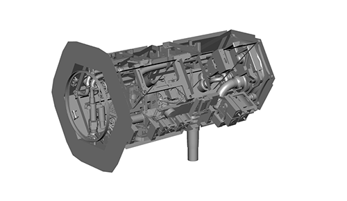

卫星内部照明
使用 _Ai 区域光_渲染的卫星内部场景
要下载对应的 Maya 场景文件，请单击此处。
在本教程中，我们将介绍如何转化和渲染之前针对 mental ray 渲染器设置的卫星内部场景。我们还将介绍使用 AOV 渲染内部场景时如何找出噪波源。 请注意，每个内部场景都是不同的，都面临着独特的照明和渲染挑战。尽管本教程尝试利用常用的技术，但它们可能不适合所有内部场景。
有关采样的详细信息，请单击此处。
场景
- 打开卫星场景文件。您将看到它由外部壳体、门和内部（如下方所选）构成。

- 隐藏其余所有对象，只留下 satelliteInterior 组。

“satelliteInterior”组
转化为 Arnold 着色器
- 将名为 Interior 的 mental ray 着色器 mia_material_x_passes 替换为 standard_surface 着色器。
场景照明
圆盘灯光
- 创建一个 _Ai 区域光_。将 light_shape 更改为*圆盘(Disk)*并调整其位置，确保其指向下图中的门口。
将“曝光”(Exposure)增加到 18 左右。
先后在灯光“采样数”(Samples)设置为 1 和 3 时渲染场景。此时您应该会发现部分噪波有所改善。但是，通常来说，我们很难得知噪波来自灯光还是其他来源。
 |
|
| _light.samples_：1 | _light.samples_：3 |
如果我们将 diffuse_samples 和 specular_samples 的采样数设置为 0（即禁用它们），就可以隔离直接照明，更好地确定增加 light.samples 数对场景产生的影响。打开“渲染设置”(Render Settings)窗口，并在采样(Sampling)*下，将 *diffuse_samples 和 specular_samples 设置为 0。禁用 diffuse_samples 和 specular_samples（设为 0）有助于确定灯光采样问题。相关效果如下图所示。
| _light.samples_：1 | _light.samples_：3 |
本教程使用的 Ai 区域光_的 _light_shape 设置为_“圆盘”(Disk)_。但是，渲染带有方形窗户的内部场景时，建议使用 quad_light。quad_light 还有一个“扩散”(Spread)属性，可用于沿灯光方向聚焦照明。渲染内部场景时，此属性很有用。下图显示了使用不同_“扩散”(Spread)_值渲染此场景时的差异。
| _扩散(Spread)_：1 | _扩散(Spread)_：0.5 | _扩散(Spread)_：0.25 |
下面的动画显示了降低灯光“扩散”(Spread)属性对内部照明的影响。
_quad_light.spread_：1 到 0.25
设置采样值、光线深度和区间限定
AOV(AOVs)
尽管我们增加了灯光采样数设置，场景中还是存在噪波。这时可尝试通过调整采样(Sampling)值来解决此问题。增加这些值时必须考虑周全，因为这可能会对渲染时间产生很大的影响。要想确定噪波来自哪里进而确定应该增加哪些采样数，一个既快速又轻松的方法是渲染出 AOV。
有关采样和去除噪波的详细信息，请单击此处。
- 使用 Arnold *渲染视图窗口渲染场景。默认情况下，您应该看到系统正在渲染美景渲染。要更改希望查看的 AOV，请单击下拉菜单或转到“视图 > AOV”(View > AOVs)*。
仔细检查 AOV 后，我们可以更有把握地隔离并确定场景中的噪波来源。direct_diffuse 和 direct_specular AOV 中可见稍许噪波，因为我们已经增加了直接 light.samples 数。但是，indirect_diffuse 和 indirect_specular AOV 中可见大量噪波。因此，我们需要分别增加 diffuse_samples 和 specular_samples 采样数。
下图显示了 Arnold 渲染视图窗口中可见的 AOV。
| direct_diffuse | direct_specular |
| indirect_diffuse | indirect_specular |
摄影机 (AA) 采样数
我们可以尝试增加摄影机 (AA) 采样数来帮助解决场景中的一些噪波。但是，间接漫反射和镜面反射区域仍然能看到噪波。
| 3 | 6 |
漫反射采样数
下面的图像显示了增加漫反射采样数时的差异。
| 2 | 4 |
请记住，漫反射采样操作针对每个 AA 采样执行，因此，摄影机 (AA) 采样数和漫反射采样数的值都较高时，往往会减慢渲染速度。
光线深度
光线深度使您可以配置相应的设置，用来基于光线类型限制光线递归。较高的值会增加渲染时间。
增加光线深度值时需要小心谨慎。光线深度值加一可能会导致渲染时间翻倍。
漫反射光线深度
此值定义最大光线漫反射深度反弹。如果 diffuse_ray_depth 为零，则相当于禁用漫反射照明。增加深度会将更多的反弹光添加到场景，这在内部场景中可能尤为明显。可以在下图中看到逐步增加漫反射反弹时的细微差异。
| 0（仅直接灯光） | 1 |
| 2 | 3 |
添加大气体积
要为场景添加一些大气环境，可尝试为场景添加一些 *atmosphere_volume*。
转到“渲染设置”(Render Settings)的环境(Environment)*选项卡。将 *atmosphere_volume 连接到“大气”(Atmosphere)属性。
如果渲染场景，则不会看到任何结果。这是因为 atmosphere_volume.density 默认为 0。将其增加到 1，并使用 IPR 渲染场景。
添加 atmosphere_volume 在渲染中引入了一些高亮杂点*。这时我们可尝试通过 *atmosphere_volume.samples 数来减少这些高亮杂点。
有关如何处理高亮杂点的详细信息，请单击此处。
但是，即使增加 atmosphere_volume.samples 数后，场景中仍然存在一些高亮杂点。
| 5 | 20 |
区间限定
我们可使用渲染设置(Render Settings)窗口中的_“区间限定”(Clamping)_自动修复场景中残留的所有高亮杂点。
下面的图像显示了减小“最大值”(Max Value)对高亮杂点的影响。
| _max_value_：10。高亮杂点可见。 | _max_value_：1。无高亮杂点。 |
渲染最终图像
打开“渲染设置”(Render Settings)窗口中的采样(Sampling)。对于测试渲染，“摄影机(AA)”(Camera (AA))采样数设置为 3 已足够。但是，对于最终帧渲染，至少需要将它增加到 5。在本例中，“漫反射”(Diffuse)和“镜面反射”(Specular)均设置为 6。
有关采样的简要手册，请单击此处。
Arnold 日志
使用 MtoA 渲染场景时，建议查看渲染设置(Render Settings)窗口的诊断(Diagnostics)选项卡中的 Arnold 日志。此日志文件将显示出现的警告和统计信息，这些信息有助于对场景文件进行诊断。
就是这样。祝贺您已完成了本教程。现在我们要去探索新的渲染世界！
有关为室内场景提供照明的详细信息，请单击此处。